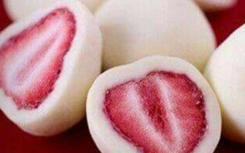

Bombitas de frutilla y yogur

Ingredientes
- 12 Frutillas
- 400g de yogur
Preparación
- Batir el yogur hasta que quede cremoso y volcarlo en una cubetera, cubriendo 3/4 de su capacidad.
- Llevar al freezer por 1/2 hora y, mientras tanto, lavar y cortar las frutillas al medio.
- Colocar una a una en la cubetera, presionando hasta que queden al ras
- Cubrir con un film y congelar.
- ¡Al momento de servir, solo hay que desmoldar y listo!
Siguiente receta
volver al inicio